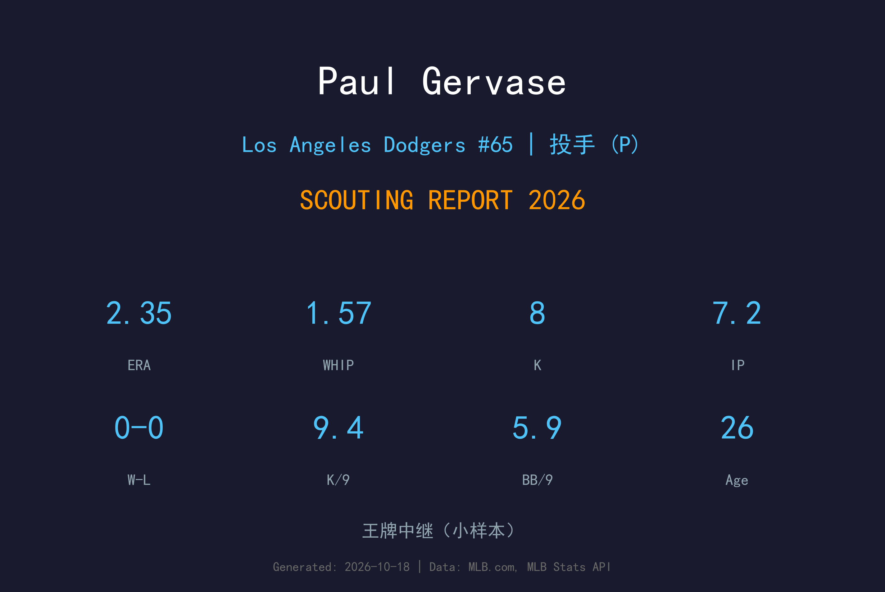
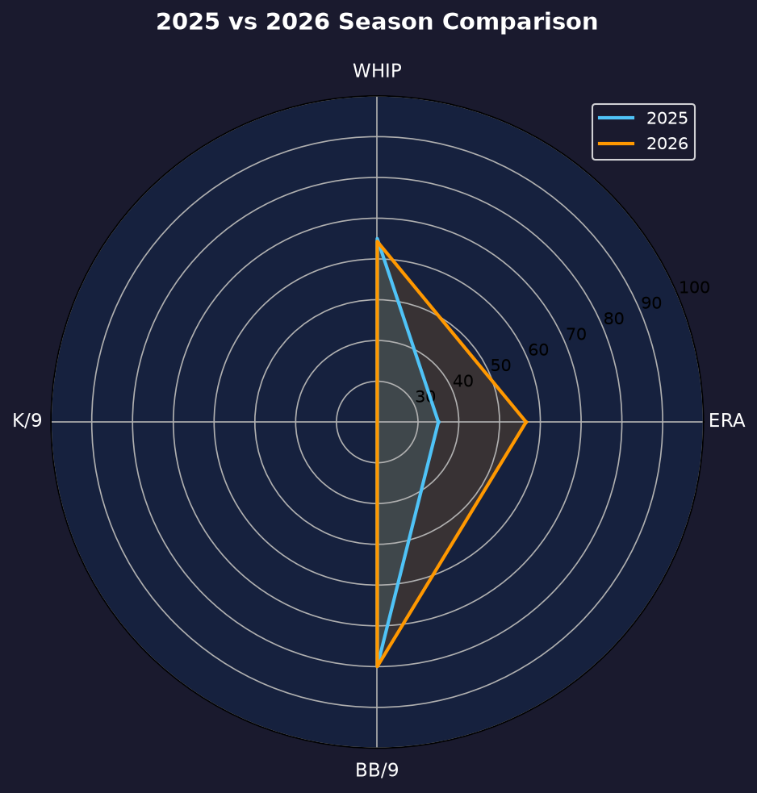
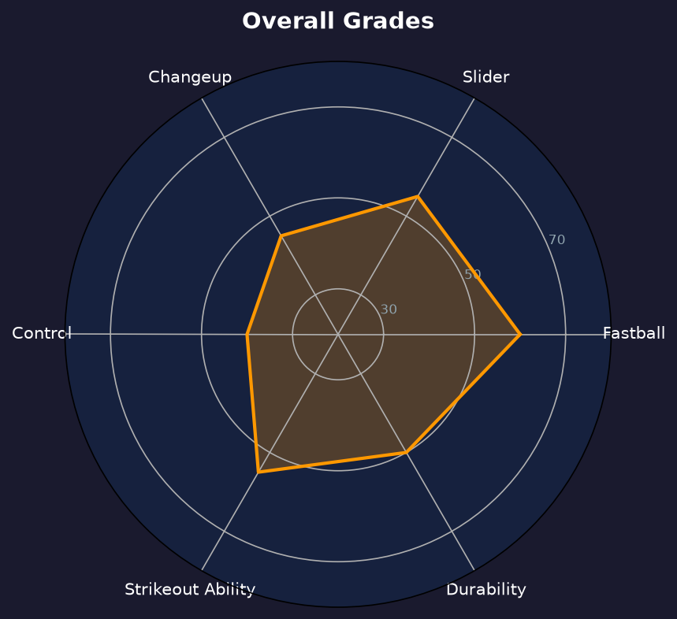

Los Angeles Dodgers #38 | 后援投手 | 右投 / 右打 | 6'10" 摩天楼

Paul Gervase 是道奇牛棚里最引人注目的存在——6 尺 10 寸的摩天楼身高，MLB 现役最高的投手之一。他的出手点接近打者头顶，快速球从极端角度下坠，即使球速不是 elite，也能制造大量软弱击球。
2026 年他 4 场出赛缴出 2.35 ERA、9.39 K/9 且未被击出任何全垒打——本垒打隐患（2025 年在光芒的短暂出赛中暴露过）似乎得到改善。但 5.87 BB/9 的保送率说明：这座摩天楼的每一块砖，还堆得不够稳。
26 岁的 Gervase 是道奇 40 人名单上典型的"高回报开发型"后援：身体天赋罕见，控球决定天花板。若能把 BB/9 压到 4.0 以下，他有机会成为 Roberts 教练在 7-8 局信任的那张牌。
Rutgers 大学毕业后，在 2022 年 MLB 选秀第 12 轮（总第 361 顺位）被坦帕湾光芒选中。高挑身材让球探愿意在他身上赌一张长期彩票。
在光芒完成 MLB 首秀。短暂的大联盟初体验暴露了被轰隐患，但三振潜力清晰可见。
转投道奇体系后于 5 月 8 日上调，4 场出赛 7.2 局 2.35 ERA、8 次三振且 0 被轰，季末留在 40 人名单。
小样本警告：仅 7.2 局。ERA 漂亮但 WHIP 1.57 偏高——每局都让跑者上垒，靠的是三振与零轰逃脱。

| 赛季 | 球队 | G | ERA | IP | SO | BB | WHIP | HR |
|---|---|---|---|---|---|---|---|---|
| 2025 | 光芒 | 1 | 4.50 | 2.0 | 2 | 1 | 1.50 | 0 |
| 2026 | 道奇 | 4 | 2.35 | 7.2 | 8 | 5 | 1.57 | 0 |
两个赛季合计仅 9.2 局，大联盟样本极小。两年合计 10 次三振、9.30 K/9 的三振潜力是真实信号；保送率（生涯 6.2 BB/9）是必须跨过去的坎。
球速：94-97 mph
评分：B+
他的王牌球种。6'10" 身高让出手点逼近打者头顶，快速球从极高角度下压，即使球速未达 elite，也能制造大量挥空与软弱击球。
球速：82-86 mph
评分：B
对付右打者的主要出局武器，横向位移明显，与速球形成约 12 mph 速差与双重轨迹差异。落在后脚边时极难处理。
球速：86-89 mph
评分：C+
对付左打者的配球。下坠幅度尚可，但稳定性仍在打磨——这也是左打者对他威胁更大的原因。
Gervase 采用高四分之三（high-three-quarters）动作，出手点极高，球路入射角陡峭，这是他能以非顶级球速制造三振的核心机制。但高大身材也带来协调挑战：动作节奏一旦失稳，控球容易崩盘，连续保送随之出现。他的 WHIP（1.57）与 ERA（2.35）的巨大裂缝正来源于此。
2025 与 2026 两个大联盟赛季他都没有被击出全垒打（合计 9.2 局）——进垒点与配球在道奇教练团的调教下保持得不错。当然，样本还太小，被轰隐患是否根除需要更长的局数来回答。
当前角色：40 人名单 emergency depth，大部分时间待在 3A Oklahoma City。短期目标是在 AAA 稳定出赛、把 BB/9 压到 4.0 以下；长期天花板是高杠杆布局投手（第 7-8 局 setup）或右打者对位专家。使用情境：需要三振化解危机、或利用身高优势对付右打者时。

身体天赋罕见、控球决定天花板的开发型后援
B- 级 / 高回报开发型后援
Paul Gervase 的2027赛季目标是在 3A 稳定出赛、把 BB/9 压到 4.0 以下，争取重回大联盟并进入 Roberts 教练的常规牛棚轮值。他的天赋独特到值得等待，但时间不站在高身材投手这边——动作模式必须尽快固化。
2026：5/8 上调，4 场 2.35 ERA、9.39 K/9、0 被轰；季末留 40 人名单
2027：目标 AAA 整季稳定出赛，BB/9 ≤4.0，争取大联盟 25-30 场
2028+：若控球达标，可竞争 setup 位置，成为道奇牛棚的独特武器
Paul Gervase 2000 年 5 月 23 日出生于北卡罗来纳州 Cary，但成长于新泽西州 Middletown。高中时期，他那副远超同龄人的骨架就引起了球探注意。毕业后他进入 Rutgers University，在大学棒球队担任投手，逐渐把身高转化为球速与角度。
2022 年 MLB 选秀，坦帕湾光芒在第 12 轮（总第 361 顺位）选中了他——对一名身高 6'10" 的投手来说，这是一次典型的"彩票式"投资。光芒体系把他改造成牛棚投手，他的快速球在小联盟不断攀升，2025 年 6 月 21 日完成大联盟首秀。
2026 年他转投洛杉矶道奇——一支以"点石成金"著称的投手开发团队。在这里，他的配球策略与进垒点开始精细化，4 场出赛 2.35 ERA、零被轰的表现让道奇决定把他留在 40 人名单。场外的 Gervase 以冷静低调著称；休赛期他需要格外注意体能与柔韧性训练，以维持这副罕见身躯的长期健康。他的目标很简单：让"6'10" 的道奇投手"从猎奇新闻变成对手的噩梦。